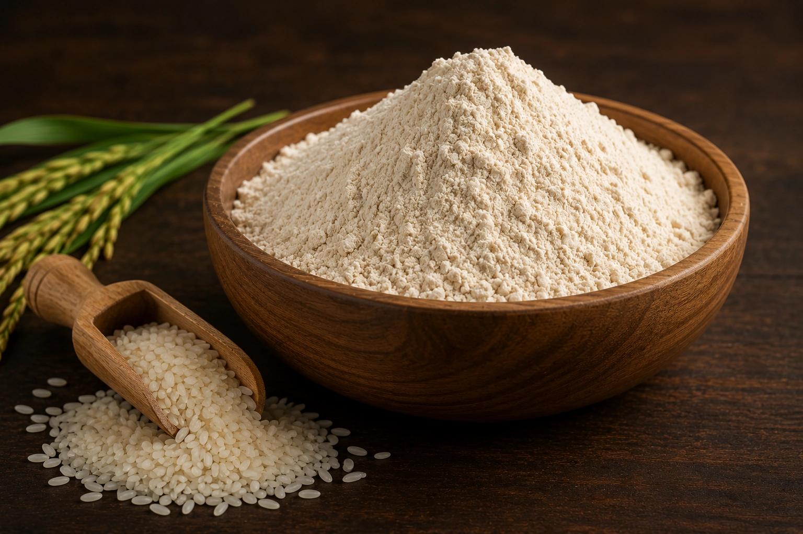
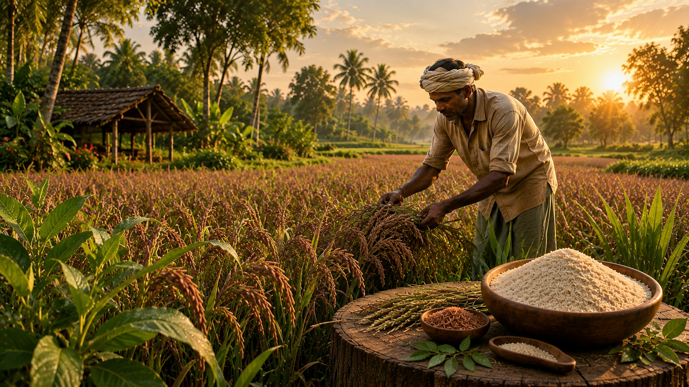
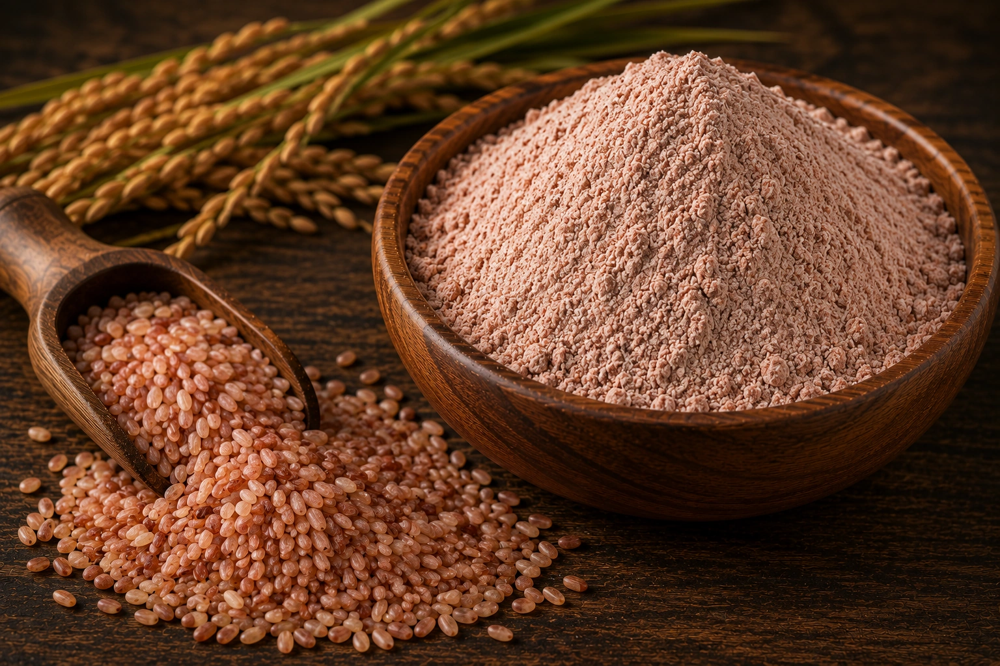
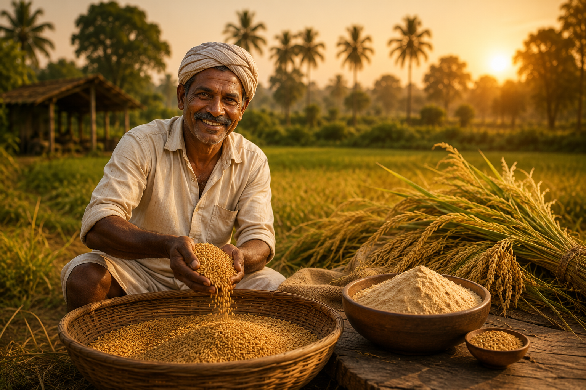
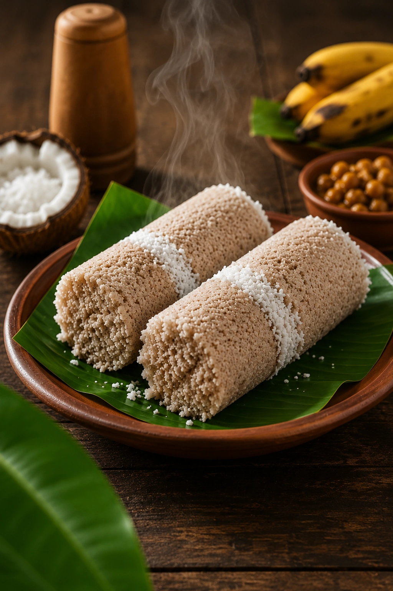
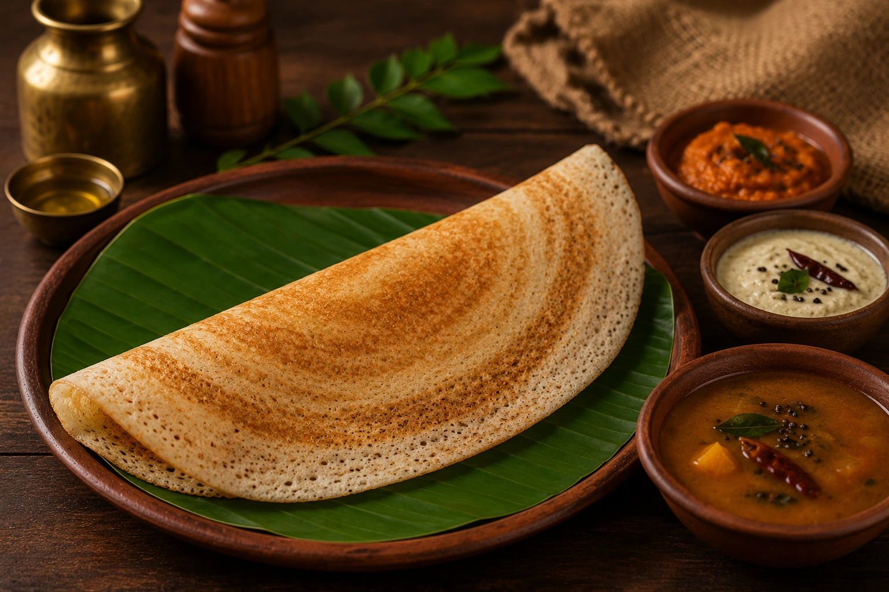
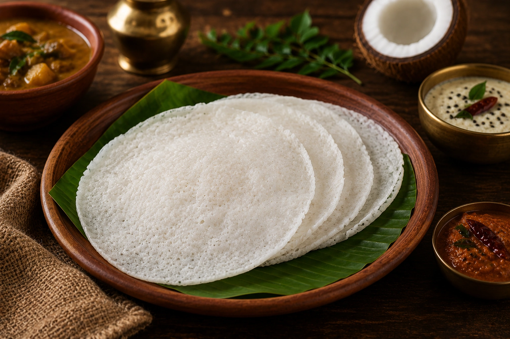
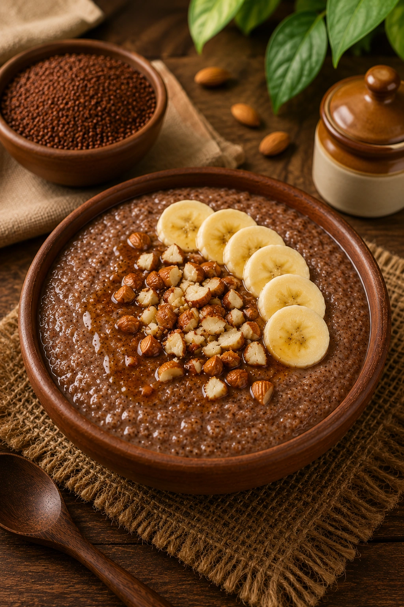
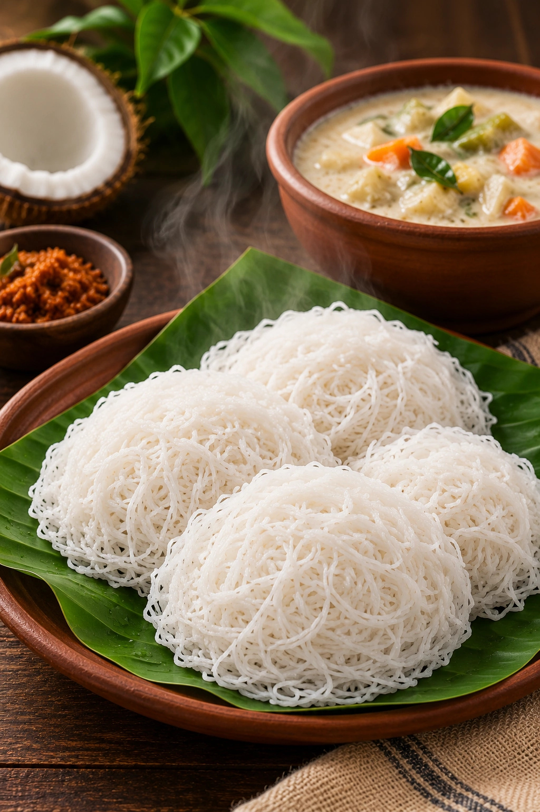
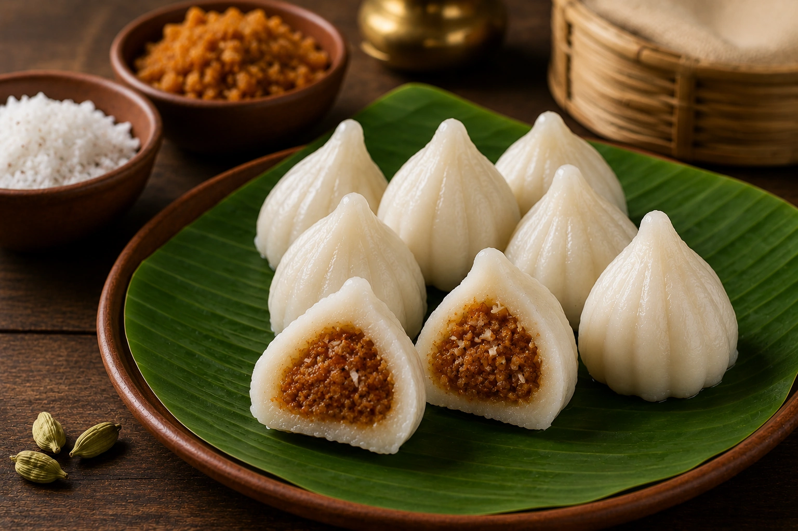

Rice Powder
Ari Podi
Stone-ground from sun-dried Kerala rice — perfect for puttu, kozhukatta and more.

Rice powders and cooking podis, stone-ground in small batches and sourced directly from Kerala's own farmers. No shortcuts, no preservatives — delivered to your door, anywhere in Kerala.


Mandara began in the paddy belts and spice gardens around Thrissur, where our founders grew up watching grandmothers hand-grind turmeric and rice on stone urals. Today we work directly with a small circle of Kerala farmers — no middlemen, no long supply chains — sun-drying and stone-grinding every batch the traditional way. Just honest food, the way Kerala has always made it.
From our farms and grinding units in Thrissur to your kitchen — fresh, fast and reliable, across all 14 districts of Kerala.






Fill in a few details and we'll open WhatsApp with your order ready to send straight to us — we'll confirm price, quantity and delivery from there.
Yes — we deliver to all 14 districts of Kerala through trusted courier partners, usually within 3–5 business days of confirming your order.
Every Mandara product is 100% natural and stone-ground, with no preservatives, additives or artificial colours added at any stage.
Tap "Order on WhatsApp" anywhere on this page, or fill in the quick order form above — we'll confirm your order, price and delivery timeline directly on WhatsApp.
Directly from a small circle of trusted farmers around Thrissur and other parts of Kerala, with no middlemen in between.
We confirm payment, including UPI or cash on delivery, directly with you on WhatsApp once your order is finalised.

Every order you place helps a farming family in Kerala grow — and brings a little more of Kerala's purety to your kitchen.